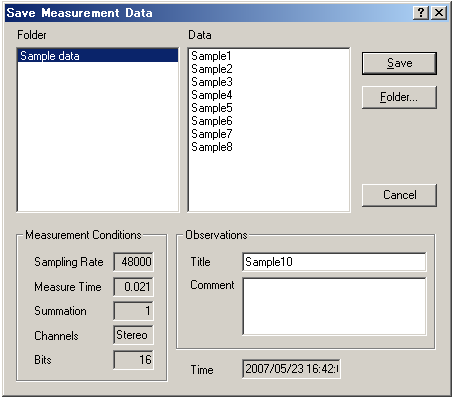
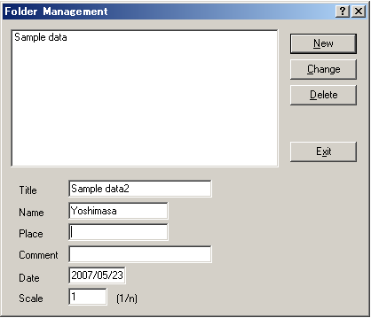
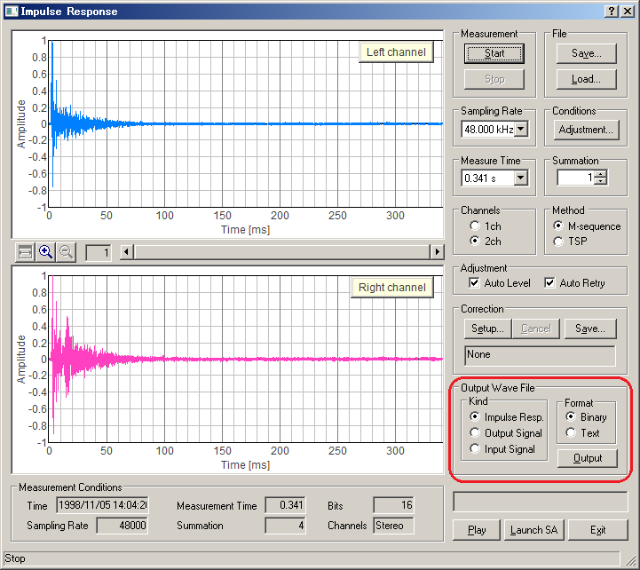

DSSF3 > RA > Impulse response > Measurement guide
Saving measurement data
Once the impulse response is measured, it can be saved to the database. The acoustical parameters can be calculated by using SA (Sound Analyzer).
Click the "Save" button on the Impulse response window, then the "Save Measurement Data" dialog opens as below. To save data, 1) enter the title and comment on the data, 2) select the folder, and 3) click the "Save" button. If there is no folder, or you want to save data in a new folder, you can create a new folder. See below.

When you make a new folder, click the "Folder..." button on the Save Measurement Data dialog. Folder Management dialog opens as in the figure below. Enter the folder title and click New button.

Also, the measured response can be saved as a WAV format. See the "Output Wave File" on the Impulse response window. Select "Impulse Resp." and "Binary", and click the "Output" button. Output signal and input signal used during a measurement can also be saved. Saving data as a text file is also possible.

DSSF3 > RA > Impulse response > Measurement guide